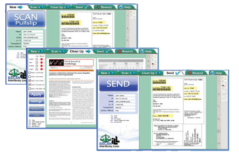

BSCAN ILL Systems
Article Exchange
ILLiad/Odyssey
Email
FTP
Clio
Relais
Complete Interlibrary Loan Scanning
and Image Treatment Workflow System
... better image quality, fewer errors, and easier operation
In the early days of digital interlibrary loan and digital document delivery, the available software was simple and image quality expectations of requestors were low. Times have changed. The demand for faster workflow delivery and perfect, printer-ready images has made the current software environment complex, creating significant challenges in training new employees. BSCAN ILL simplifies existing processes and produces perfect, printer-ready images.
BSCAN ILL starts by eliminating the need to manually enter requestor information. BSCAN ILL automatically reads the information that is required by interlibrary loan document de-
livery software from scanned pull slips, not only saving time but also eliminating human error.
Articles are scanned using one of a family of high speed face-up scanners: Click Mini, Click, and Bookeye 4 V3, V2 & V1. By eliminating the constant book flipping required by flatbed scanners, these face-up scanners are three to five times faster than the fastest face-down scanners, and they do not cause book spine damage. For low volume ILL operations, BSCAN ILL also runs BookEdge flatbed scanners, employing their book edge feature and a faster mode that scans two pages at a time.
Once articles are scanned, BSCAN ILL's powerful image treatment capabilities automatically eliminate skew and remove unwanted black borders, fan and gutter.
Finally, BSCAN ILL automatically sends requests through ILLiad/Odyssey, Ariel, RAPID, Clio, Article Exchange, Relais, FTP, and e-mail and can notifiy ILLiad/Odyssey in each case, all without any need for further human intervention. Resending articles is also a snap.
If you cold...
...add Digital Document Delivery
services for as little as $2,000 per year, would you?
...cut your ILL scanning time in half for less than $2,000 per
year, and in half again for $500 more, would you?
...simplify your digitization process, reduce worker training
time, produce clean, straight print-ready images every
time for $2,000 per year, would you?
What if
you could do all this plus eliminate
keying the requestor info, automatically deliver
articles, resend requests days later if a delivery
failure occurs, and operate seamlessly with all
other ILL software and systems (e.g. Article
Exchange, ILLiad/Odyssey, Clio, Relais, Ariel,
FTP & email)?
would you?
BSCAN ILL
Dramatically Improves ILL Digitization
A fundamental tenet that has always bound the academic research community together is open sharing of newfound knowledge. Today, this open sharing is going on at a feverish pace and digital interlibrary loan services are an essential vehicle. Scholars from all fields are becoming increasingly dependent on their ability to acquire journal articles in just one day.
In the early 1990s, the pioneers of interlibrary loan digitization had no choice but to adapt commercial scanning equipment to meet their needs. Ariel was the only available document delivery software and there were no scanners made specifically for scanning books, journals and maps. Over time, that changed. Planetary scanners became available in the late 1990s. The first release of BSCAN ILL automatically read (using OCR) the requestor information from pull slips without manual keying, supported rapid scanning and image cleanup, and automatically posted to Ariel with the press of a single button. Since then, ILLiad, Odyssey, Ariel, RAPID, Clio and Article Exchange have been integrated into BSCAN ILL with the same hands-off automation. BSCAN ILL has a host of valuable features, many of which are not available with any other system.
In addition to allowing review of electronic articles and resource sharing to reduce per article scanning costs (e.g. for archival, electronic course materials creation, scanning projects), only BSCAN ILL offers you:
One easy user interface, integrated seamlessly with Article Exchange, ILLiad/Odyssey, RAPID, Relais, Ariel, Clio, FTP & Email
- reduces training time significantly
Optimized for the latest technology in face-up scanners, including all Bookeye models, Click, Click Mini, and face-down scanners such as BookEdge and WideTEK 25
Automatically reading of requestor information from pull slips
Automatically sending without intervention by the scan operator
Central management with central, portable and remote scanning
Automatic hold of all scanned articles for up to 30 days for fast
correcting and easy resending
Automatic updating of ILLiad/Odyssey, even if the request was delivered by another means such as Ariel, Relais, Clio, FTP or email
Automatic image cleanup and output of 'printer-ready' images
Out with the Old and In with the New
Traditional Face-Down Capture
Seven Complete Configurations to Choose From
BSCAN ILL can be purchased separately or as a complete system with the following exceptional book digitization equipment
Three Things You Should Know About ILL Digitization Equipment
SPEED
All of the systems that DLSG bundles with BSCAN ILL are quite fast, but our face up scanners are the fastest. By eliminating the need to flip the volume repeatedly, our face-up scanners are up to 5 times faster than the fastest face-down scanners.
ONGOING SUPPORT & SERVICES
Digitization for ILL and digital document de- livery are production processes. It is impor- tant that they be backed by a reliable vendor team, and Image Access has an unmatched service and support record.
CAPTURING CONTENT DEEP INTO THE BOOK FOLD
Never Fail an Article Request Again
Bookeye Method
Bookeyes follow the natural curve of the book when they scan. Good lighting is essential for good scanning, and Bookeye 4 scanners em- ploy two white LED light bars that sweep across the material.
Click Method
Click captures the left and right pages with two separate cameras positioned at ideal angles. An array of 420 individu- ally aimed white LED lights produce bright, evenly distrib- uted illumination from above and behind the scan bed, thus avoiding reflection.
Bookeye Method
The BookEdge is a flatbed scanner with a specialized feature that easily captures close into the bookfold without damaging the spine.